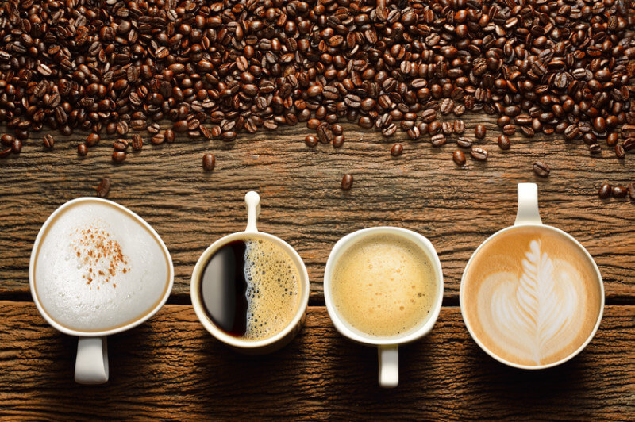

Types Of Coffee

Coffee is and has been a great boosting beverage. Not only does it have a great smell, but it also tastes amazing, especially in the morning. The type of coffee you choose often affects how much caffeine you have in your cup.
Cappuccino:
Cappuccino is an espresso-based coffee made with smaller amount of milk and a thick layer of foam on top. It has a nice bold taste.
Studies reveal that a cup of cappuccino up to 180 ml a day can significantly prevent the oxidization of bad cholesterol and prevent other health problems. It also lowers the chances of a stroke by 20% and take it without sugar, to keep blood sugars under control. It also assists in digestion.
Espresso:
Coffee lovers often describe espresso as a little cup of delicious energy. This beverage will lift your mood on a bad day and helps in maintaining great health.
It is very similar to South Indian filter coffee, just made with fresh ground coffee powder and hot water.
Drink espresso daily to boost your memory and improve concentration.
High on antioxidants, espresso is a powerhouse of polyphenols that help in fighting various infections, allergies and protect from free radicals like air pollution, UV rays and smoking hazards. It is also low on calories, so gulp it down, guilt free.
Latte:
Latte is made by that is normally made with espresso, mixing it with steamed milk and milk foam. But, what makes Latte unique is its flavours.
These days Latte comes in various fancy types like turmeric latte, beetroot latte, carrot cake latte, rainbow latte and even mushroom lattes. Drink it in any flavour, lattes are known for decreasing the risk of type 2 diabetes. A cup of latte in moderation helps in preventing cardiovascular disorders and aid in burning fat.
Turmeric, beetroot or any other natural flavoured lattes make your skin glow, work as memory boosters, relieve muscle pains and fight infections.
Mocha Frappe:
Mocha Frappe is another popular variety and it is a delight for those with sweet tooth. Made from coffee, sugar, condensed milk, chocolate syrup and whipped cream Mocha Frappe provides instant energy.
It also helps in fighting depression, maintaining liver health, beat insomnia, in relieving muscle pain and maintaining bone density.
Green Bean Coffee:
The green bean coffee extract is made from unroasted coffee beans, is high in a compound called chlorogenic acid. The extract is mixed with hot water with sugar, honey or cardamom for flavour.
It is believed that this type helps with weight loss. It is also loaded with antioxidants, helps in lowering blood pressure, reduces levels of bad cholesterol and improves blood circulation.
The green coffee besides extract is also available in the form of supplements.
(Source: https://www.netmeds.com/health-library/post/health-benefits-of-different-types-of-coffee/)
(Modified by Mihaela Uzunova)